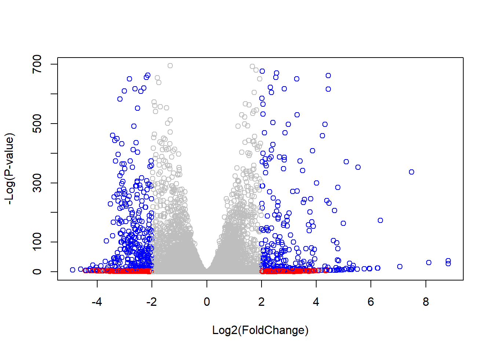

Welcome to Bioconductor
Vignettes contain introductory material; view with
'browseVignettes()'. To cite Bioconductor, see
'citation("Biobase")', and for packages 'citation("pkgname")'.
Attaching package: 'Biobase'
The following object is masked from 'package:MatrixGenerics':
rowMedians
The following objects are masked from 'package:matrixStats':
anyMissing, rowMedians
Warning in DESeqDataSet(se, design = design, ignoreRank): some variables in
design formula are characters, converting to factors
dds =DESeq(dds)
estimating size factors
estimating dispersions
gene-wise dispersion estimates
mean-dispersion relationship
final dispersion estimates
fitting model and testing
Get the results for HOXA1 knockdowns vs control siRNA >Q look at the results summary to see how many genes are up or down regulated
res =results(dds, contrast=c("condition", "hoxa1_kd", "control_sirna"))summary(res)
out of 15975 with nonzero total read count
adjusted p-value < 0.1
LFC > 0 (up) : 4349, 27%
LFC < 0 (down) : 4396, 28%
outliers [1] : 0, 0%
low counts [2] : 1237, 7.7%
(mean count < 0)
[1] see 'cooksCutoff' argument of ?results
[2] see 'independentFiltering' argument of ?results
Making a Volcano Plot (log2 fold change vs -log adjusted p-value)
plot(res$log2FoldChange, -log(res$padj))
Q Make the plot better, adding color and axis labels
#make color vector for genes (nrow will allow u to have exact #)mycols <-rep('gray', nrow(res))#change results greater than 2 to redmycols[ abs(res$log2FoldChange) >2] <-'red'#make new index for p<0.01 and fold >2inds <-abs(res$padj <0.01) & (abs(res$log2FoldChange) >2 )#replace mycol entries mycols[inds] <-'blue'plot( res$log2FoldChange, -log(res$padj), col = mycols, xlab ='Log2(FoldChange)',ylab ='-Log(P-value)' )

Adding Gene annotation
library('AnnotationDbi')library('BiocManager')
Bioconductor version '3.16' is out-of-date; the current release version '3.17'
is available with R version '4.3'; see https://bioconductor.org/install
##############################################################################
Pathview is an open source software package distributed under GNU General
Public License version 3 (GPLv3). Details of GPLv3 is available at
http://www.gnu.org/licenses/gpl-3.0.html. Particullary, users are required to
formally cite the original Pathview paper (not just mention it) in publications
or products. For details, do citation("pathview") within R.
The pathview downloads and uses KEGG data. Non-academic uses may require a KEGG
license agreement (details at http://www.kegg.jp/kegg/legal.html).
##############################################################################
library(gage)
library(gageData)data("kegg.sets.hs")data("sigmet.idx.hs")#focus on signaling/metabolic pathwayskegg.sets.hs = kegg.sets.hs[sigmet.idx.hs]head(kegg.sets.hs,3)
'select()' returned 1:1 mapping between keys and columns
Info: Working in directory C:/Users/lilxj/Documents/BIMM 134 R Files/Class13
Info: Writing image file hsa04110.pathview.png
Pathview plotting using
keggrespathways <-rownames(keggres$greater)[1:5]# Extract the 8 character long IDs part of each stringkeggresids =substr(keggrespathways, start=1, stop=8)keggresids
pathview(gene.data = foldchanges, pathway.id = keggresids, species ='hsa')
'select()' returned 1:1 mapping between keys and columns
Info: Working in directory C:/Users/lilxj/Documents/BIMM 134 R Files/Class13
Info: Writing image file hsa04640.pathview.png
'select()' returned 1:1 mapping between keys and columns
Info: Working in directory C:/Users/lilxj/Documents/BIMM 134 R Files/Class13
Info: Writing image file hsa04630.pathview.png
'select()' returned 1:1 mapping between keys and columns
Info: Working in directory C:/Users/lilxj/Documents/BIMM 134 R Files/Class13
Info: Writing image file hsa00140.pathview.png
'select()' returned 1:1 mapping between keys and columns
Info: Working in directory C:/Users/lilxj/Documents/BIMM 134 R Files/Class13
Info: Writing image file hsa04142.pathview.png
Info: some node width is different from others, and hence adjusted!
'select()' returned 1:1 mapping between keys and columns
Info: Working in directory C:/Users/lilxj/Documents/BIMM 134 R Files/Class13
Info: Writing image file hsa04330.pathview.png
Q Do the same thing above, but with the top 5 downregulated pathways
keggrespathways <-rownames(keggres$less)[1:5]# Extract the 8 character long IDs part of each stringkeggresids =substr(keggrespathways, start=1, stop=8)keggresids
Q What pathway has the most significant entities p-value, and do the msot significant pathways match the KEGG results? What could cause differences
The mitotic cell cycle ahs the most significant entities p-value at 1.21E-3. The most significant pathways do mostly match for the downregulated kegg results. Our separation of up and down regulated pathways may have changed how the data was ordered.